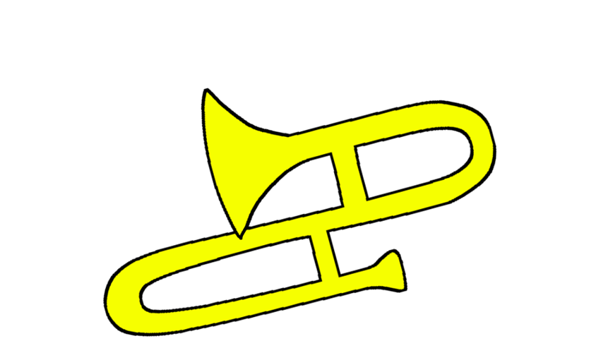
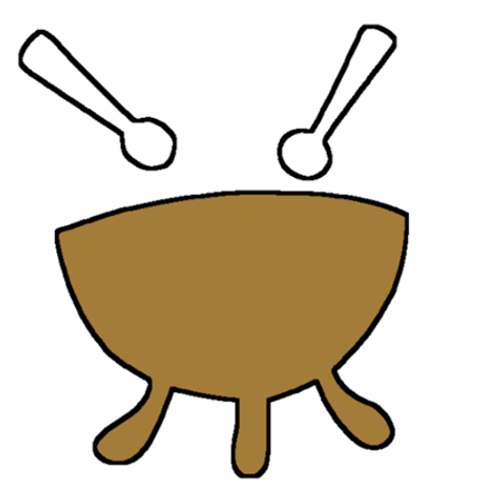
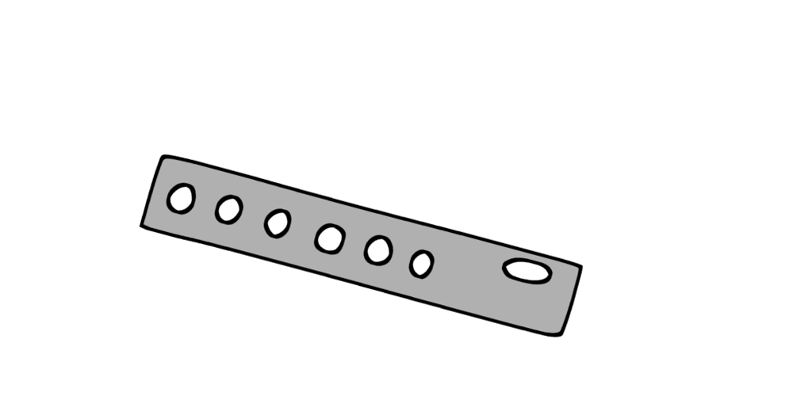

学大オーケストラ
GAKUDAI ORCH.一昨年度から「音楽部」から「オーケストラ部」へと改名した。3月に行われる定期演奏会、8月の辛夷祭においての公演、11月に昨年は昭和音楽大学で行われた地区音楽大会、1月に東京文化会館で行われる中央音楽大会などで演奏を行っている。ソロコンサートやクリスマスコンサートにおいて、部員同士の交流も活発に行われている。
8月には例年合宿を行っている。同校においてはトップクラスの長さである5泊6日という期間、閉鎖された環境下で音楽性を深めるとともに部員内での親睦を図る有意義な1週間となっている。
部活外のプライベートでも頻繁に部員同士で遊びに行くほど仲がよく、部活中も和気あいあいとした雰囲気で練習をしている。

年間予定
SCHEDULE| 4 | ・入学式 |
| ・新入生歓迎会 | |
| 5 | ・新入生正式入部 |
| ・辛夷祭に向け練習開始 | |
| 8 | ・合宿 |
| 9 | ・辛夷祭 |
| 11 | ・地区音楽会 |
| 1 | ・中央大会 |
| 3 | ・卒業式 |
| ・定期演奏会 |
活動
ACTIVITY- 活動日
- 活動場所
- 活動内容
月、水、木、金の放課後６時まで、及び、不定期で休日９時～１６時に練習があります。また、朝、昼休み、部活のない放課後にも自主練も可能です。長期休暇中にも練習があり、夏休みには合宿もあります。
学校の別館３階の、音楽室(弦)、合奏室(金管)、楽器庫(木管)、廊下(打)が主です。
演奏会に向けて、曲の練習をしています。個人練習、パート練習、セクション練習、分奏、合奏などを行います。たまにOB、OGの方が来てくださいます。
アクセス
ACCESS- 電車
- バス 【渋谷駅】南口
|
東急東横線 学芸大学駅 下車 徒歩15分
|
|
|
東急田園都市線 三軒茶屋駅 下車 徒歩20分
|
| 22番のりば | 「野沢龍雲寺循環」行き |
| 23番のりば | 「東京医療センター」行き |
| 「多摩川駅」行き |
【目黒駅】西口
| 2番のりば | 「三軒茶屋」行き |
【三軒茶屋駅】
| 「目黒駅」行き |
※いずれも「学芸大学附属高校」下車